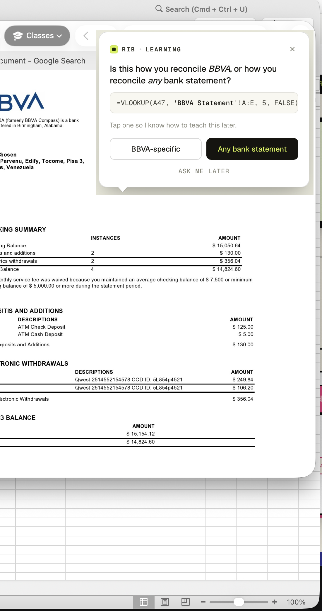

NOW WATCH.
Let your new hire understand senior's work


We record how your best people work — then walk every new hire through the exact same steps.
no textbook covers it. no onboarding deck captures it. when seniors walk out, it walks out with them — and the next hire starts from zero. again.
if you're nodding right now, you already know how this ends.
so here's what we do
computer screens or camera activity.
we watch how your best people work —
then train everyone else.
Let your new hire understand senior's work

Let your new hire understand senior's work

not a static doc. not a video they skip. a live guide that knows the senior's exact playbook — and stays next to them until they don't need it.
every team has super-workflows their best people invented. most of them die on a laptop when that person leaves. we let the rest of the team steal those workflows — the good kind of stealing.
every interaction trains a private corpus of your company's real behavior — not scraped web junk. use it to train your own models, or wait until you're ready to. either way, it's yours.
the companies that own their intent — not just their data — will be the ones whose agents actually work. the rest will be retraining from scratch. again.